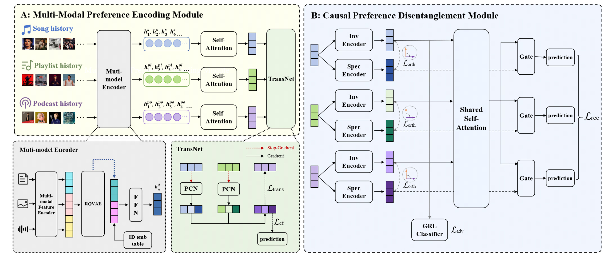
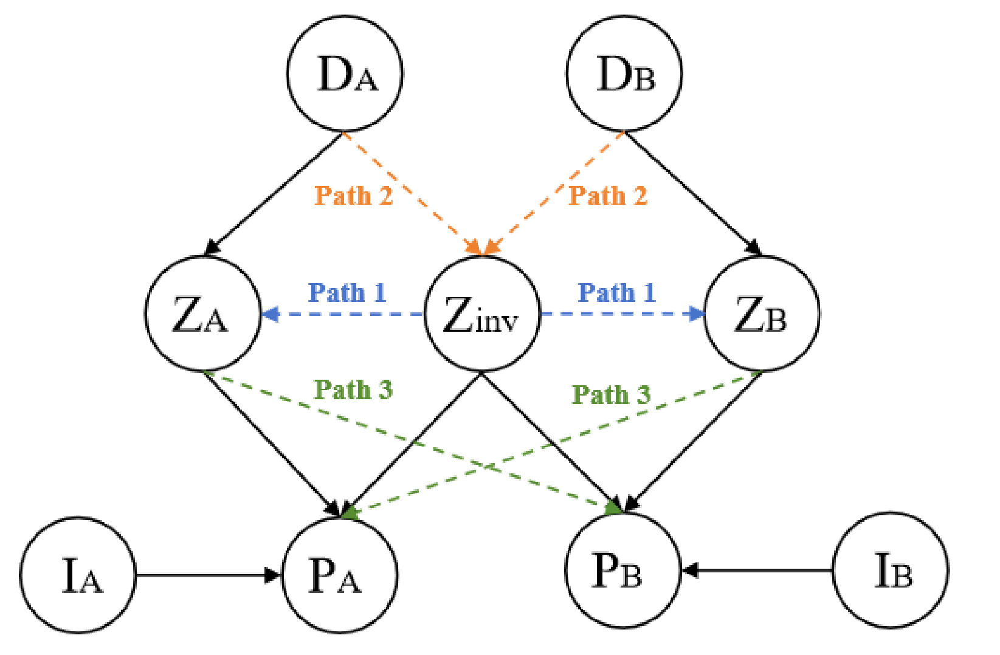
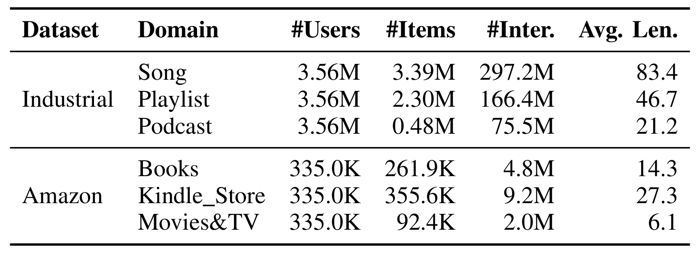
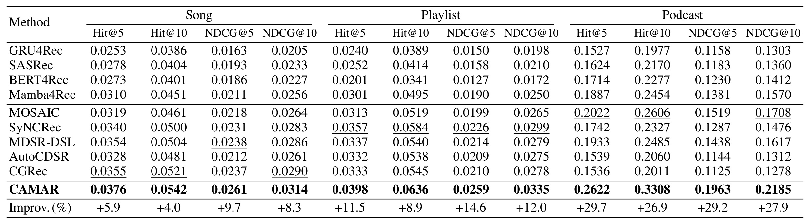
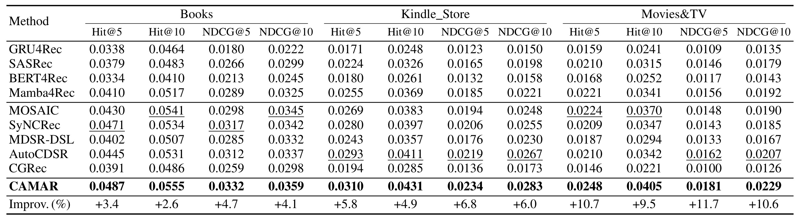
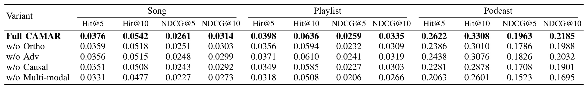
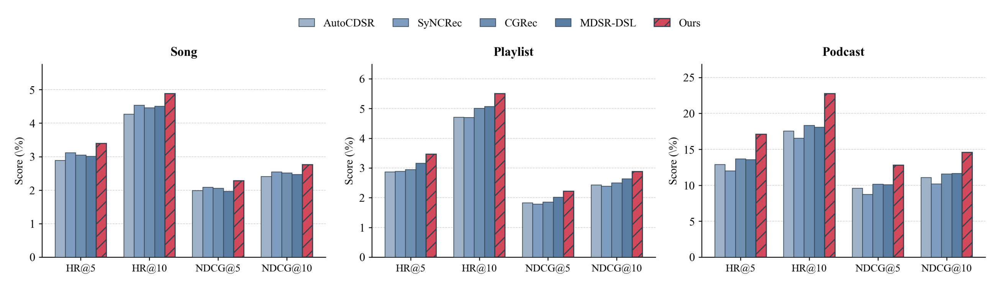
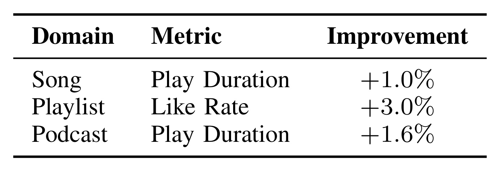

CAMAR：多域音频推荐中的共享偏好与域内偏好
arXiv:2611.33628 由杭州电子科技大学的任宇与网易云音乐的李鹏程等合作完成，2026 年 11 月 25 日提交 v1。论文研究歌曲、歌单、播客三个域的下一项召回，提出多模态语义编码、缺失域补全和受约束的跨域融合。作者在网易云音乐历史日志和 Amazon Reviews 上做离线对照，并在网易云音乐主场景测试增量召回通道；本轮未核验到独立代码仓库。
音乐平台联合学习歌曲、歌单与播客时，高流量域容易主导共享参数并损害弱域；依赖物品标识的协同信号又难以在行为重合稀少时连接语义相近的内容。
1. 背景和问题
1.1 多域召回同时面对序列异质性和行为重合不足
一个音乐应用可以在同一会话内承接连续的歌曲播放、对某个主题歌单的收藏和对长篇播客的收听。三个动作都可能由通勤场景触发，但每个域中何时算一次有效反馈、用户会在多短的时间内重复消费、相邻交互之间能继承多少兴趣都不一样。歌曲序列可能主要由短时曲目切换组成，歌单涉及成组内容和使用场景，播客更受主题、主持人和长节目节奏的影响。CAMAR 将这些目标放在同一召回任务中，同时让每个域拥有独立的物品目录和下一项正例。它输出的是能用于候选检索的目标域用户向量，后面仍可以接入已有精排和重排。
仅做单域序列建模时，每个域独立估计下一项。这样最容易保持反馈口径和目录边界，代价是当播客历史很短、歌曲行为很多时，歌曲里可迁移的主题信息派不上用场。常见的双域迁移则会为一个指定目标挑一个源域和一套映射。域数增加时，源目标方向的配对快速增加，针对某一方向训练出来的对齐也未必可以复用到另一个方向。多域序列推荐让三个域都同时作为监督目标和辅助信息源，相应的困难是共享网络受到多个数据分布和多个损失的梯度，某条跨域路径传递的内容可能对一个域有用，对另一个域却造成干扰。
论文在工业基准中为三个域保留的是同一批高覆盖用户。即使控制了用户身份分布，歌曲、歌单与播客的平均历史长度仍分别为 83.4、46.7 和 21.2，交互次数差距来自域内的行为定义和使用频次。一个共用编码器看到的高频歌曲样本可以产生更密集的更新，利用它提升整体目标也可能牺牲短历史播客的排位。与此同时，是否使用多个域、每个域中有多少事件、离现在多远都会影响共享信息的可靠度。作者将高流量域主导视为一种机制假设。整体模型间的离线分数可以证实弱域对某些联合训练方法更加敏感，若要直接证实梯度主导，则仍需观察分域梯度、参数更新和域间转移的关系。
第二个问题出在物品级对齐。歌曲标识和播客标识各自存在于不同目录，即使两者都有关联的主题，单纯训练标识嵌入也只能通过用户共同消费等行为间接建立关系。对长尾或者新发行内容，这类重合更稀少。标题、标签、封面、音频片段是另一条证据链，甚至可以在物品尚未积累足够交互时参与候选表征。语义相似也可能是错的，例如共同出现的“深夜”可能分别代表轻音乐氛围和讲述夜间事件。论文保留域内标识流并把语义码用作共享坐标，允许域内融合层决定如何解释在多个域中重复出现的码字。
1.2 共享的是何种偏好，补全的又是哪一级表示
研究的一个具体判断是，共享兴趣存在于主题、情绪和收听场景等相对可迁移的因素中，例如一位用户的通勤陪伴需求可由歌曲、歌单和播客共同表现。域特有的因素则包括曲目的音色或节奏，以及播客的叙事速度等。论文把两类归纳偏置写进网络结构和训练目标，要求共享分支难以被域判别器识别，域内分支留在自己的预测支路，并通过内积正则减少两路输出的重叠。它并未给所有潜变量赋予可读标签。即使表示空间可以有限地降掉域识别信号，某个维度也未必能直接读成“通勤”或“情绪”。
缺失目标域和某个目标域历史偏短是两种不同的使用条件。短序列还有可直接编码的内容，完全无历史则连一个域内用户向量都无法从目标行为生成。论文先用源域已编码的用户向量预测目标域的潜表示，再把预测结果送入目标域偏好分支。训练时可从同时活跃的用户得到真实目标域表示和下一项反馈，实际服务中只需要源域向量。这个问题与交互式助手中“新工具缺少使用记录、从其他工具估计用户策略”相似。迁移可以提供初始化假设，但真正首次使用某域的人与测试中被遮住历史的人并不保证同分布。
CAMAR 把补全和共享分开尤其值得留意。把两条有历史的域信息都映射到第三个空域之后，如果补出来的第三域和真实域一道加入全局共享池，一条行为可能经源表示及其派生表示重复影响共享偏好。作者让补全服务于缺失域自己的输出，同时把共享池限制在有历史的域。用户只有一个活跃域时，共享向量只来自该域，所谓“跨域”在此时是将一个来源的可迁移信号送到其他预测头，并没有多源相互印证。用户完全没有任何域的行为时，公式中的活跃集合均值无法构造，文章的目标是跨域冷启动，而非入站新用户的零行为启动。
如果同一候选在各域的展示位置和触达概率不同，离线监督收到的有效标签也会随产品分发路径改变。这里的历史汇集的是已发生的消费，不含未曝光物品的潜在偏好。工业所报的用户划分使评估能检查未参与训练的用户，但其域内正例依然由既有系统产生。推荐器需要区分能预测旧系统引导的下一项与能发现用户愿意接受的新内容。
这项工作应分别用两组证据回答两个问题。第一组是相同的离线正例和同一域指标下，跨域结构能否提高下一项的命中和位置。第二组是已有线上通道继续工作时，新通道贡献的候选能否穿过合并、打分与重排而改变消费。在离线中最大收益落在播客，不意味着播客在线总时长也会按同样幅度提升。在线可达候选、被其他通道重复召回的比例、精排门槛、页面曝光以及反馈窗口都会改变收益。分开阅读这两组证据，可以看清设计已有的验证以及上线时仍须补齐的观测。
2. 方法
2.1 多模态语义编码与缺失域补全
作者先提取物品图文和音频表示，再统一构造可读入推荐模型的离散索引。文本用 Qwen3-Embedding-0.6B 编码标题、描述与标签，视觉用 Vision Transformer 编码封面或海报，音频来自公开预训练表征模型处理歌曲片段或播客摘录。拼接后的特征在跨域物品的并集上拟合一个 RQ-VAE，各量化层使用残差选择码字，产出定长语义 ID。量化离线执行，推荐网络训练时读取固定的码字下标；网络里的查表向量可以被召回目标更新。码字索引由离线量化确定，在线所用的语义向量来自可训练的跨域查表。 域内物品标识独立学习，融合网络对不同域分别参数化。

Figure 1 左上三种颜色分别表示歌曲、歌单和播客序列。历史物品经过同一个语义编码入口后，被送到色彩对应的域内注意力分支，每条分支汇聚自己的历史并给出一个定长用户表示。左下的放大框把物品侧的两个信息源画开：一组是内容经过残差量化得到的码字坐标，另一组是域自己的物品标识，二者在域内的前馈网络接起来。紧邻的补全放大框里，带有停止梯度标志的线把源域向量交给有向映射，推得缺失目标域表示；来自真实目标域的表示提供匹配监督，冷域模拟还能由下一项召回监督。右半图接收已经补全到固定域数的表示，各域经过两套线性头，实线所示共享偏好输入进入域间注意力，虚线所示域内信号绕过共享层并回到自己的门控。底部域分类器从共享支路取输入，训练时引入反向梯度；右侧三个预测节点分别计算各自目录的候选分数。图里的连接关系因此区分了三种共享：物品查表的语义共享、用户向量仅在缺历史时使用的补全、各目标都能读取的共同偏好。尤其要区分第一种离线码字分配与带梯度的语义查表，以及第三种共享注意力只允许有真实历史的域参与。图中同时画出了训练辅助节点和最终打分节点，部署不需要保留反向梯度或正交损失计算。
符号解释：$i$ 为物品，$d$ 为域，$L$ 为量化级数，$c_i^{(\ell)}$ 是物品在第 $\ell$ 层的离散码字，$E^{(\ell)}$ 为各域共享的可训练查表矩阵。$e_{\mathrm{id},i}^d$ 是域内物品标识向量，分号表示拼接，$e_i^d$ 是融合后的域内物品向量。逐级求和把多列整数码变成定宽表示，域专属前馈网络对共同语义与自身协同信息一起做融合。即使两件跨域物品共享一部分码，域内得分仍可以因自己的标识嵌入和网络不同而分开。式中没有让推荐梯度改变离散所属码字，语义表迭代和离线量化迭代属于两项不同的维护工作。
符号解释：$u$ 为用户，$H_u^d$ 是目标域历史中各物品向量叠加可学习位置向量的序列矩阵，$\operatorname{MHA}^d$ 为域内的多头自注意力编码器，$\operatorname{AttnPool}$ 以可学习权重聚合位置输出，$h_u^d$ 是域内用户向量。内容相似度在这一阶段只是输入特征；该域用户向量也要反映序列位置与交互组合。每个域有自己的注意力参数和位置表，所以补全网络学习的是跨两个域表示空间的映射。
符号解释：$s$ 和 $d$ 是源域、目标域，$\operatorname{PCN}_{s\to d}$ 是有向的两层 ReLU 前馈网络，$\operatorname{sg}$ 在前向保留源向量、反向切断梯度，$\mathcal D_u^+$ 是用户有历史的域，$\tilde h_u^d$ 为补齐后的表示。对活跃目标域直接使用观测向量。没有该域时，每个来源独立生成目标域表示，再等权平均；这降低了门控的复杂性，也隐含不同源域在该用户上的可靠程度足够接近。三域共有六个有向映射，域数增加时，映射数量按二次增长，还需为每一对域找到足够的共同活跃人群。
符号解释：$\mathcal P$ 为存在共同活跃用户的有向域对，$U_s\cap U_d$ 为两域重合用户，$L_{\mathrm{rep}}$ 以目标域历史的真实向量作匹配目标，$r_{u,\mathrm{cf}}^d$ 以源域补全向量替换目标真实向量后再通过下游分解与融合得到，$x_u^{d,+}$ 是目标域下一次交互，$\ell_{\mathrm{rec}}^d$ 是用户级采样召回损失，$\mu$ 控制任务监督强度。两端对表示匹配项停止梯度，限制匹配目标只更新补全器。源侧停止梯度也保护源编码器免受掩域任务的反向更新；论文没有给出下游模块在该监督下全部冻结的规则。表示匹配避免输出远离目标编码空间，直接召回监督则让网络保留对下一项排序有用的信息。
2.2 共享偏好与域内偏好的分解
作者用结构图定义允许的信息流。不同域的语义与交互差异会塑造各自偏好，共享偏好能同时影响多个域的得分；物品只在它所属的候选目录被打分。网络的两条线性分支形式相近，域不可辨识和只在本域使用是训练信号和结构定义，而非由于某一路天然拥有了期望的数据。

Figure 2 顶层两个圆分别是域属性，中间左右两侧是域内偏好，中心是域不变偏好，底层两侧的物品输入与中间的域内得分相连。黑色实线允许域属性影响自己的特有偏好，也允许共同偏好影响两个域。蓝色虚线将共享信息送进私有偏好，意味着本应表达残差的支路重新编码了共同兴趣，论文以同一用户的两路向量内积正则近似约束。橙线将域属性送进共享偏好，可能令共享表示包含“这个事件属于歌曲流量”这类源域线索，域分类器及梯度反转负责抑制。绿线将某一域内偏好直接送到另一域的预测节点，模型不让私有表示进入共享注意力，以结构方式阻止此类直接流动。视图只画两域是为了让边清楚，同样的限制扩展到三个域。三种约束的证据强度不同：绿线能够通过读取前向连接证明直接边不存在，而正交本身无法排除非线性重复信息，对抗项也取决于判别器的能力。图没有把真实用户行为随机分配到活动域，也没有识别领域属性与消费意愿之间的因果效应。它的可检验承诺是限制模型可走的数据通路，其经验效果再用剔除相应辅助项的反事实配置对照。
符号解释：$\mathcal D$ 为域集合，$U_d$ 为域内活跃用户，$z_{\mathrm{inv},u}^d$ 和 $z_{\mathrm{spec},u}^d$ 分别来自该域的可共享、域内专属线性投影。$L_{\mathrm{ortho}}$ 以同一用户的内积平方惩罚同向或反向的线性重合，并在每个域的活跃用户上求均值。标签仍由下一项预测给出：若单靠内积，缩小一支表示的模长也可降低惩罚值，因而不能把小内积解释成信息论上的独立。需要结合每一路输出来检查有无分支退化。
符号解释：$N$ 是批大小，$\hat p_u^d$ 为二层共享域分类器给出的域概率向量，$[\hat p_u^d]_d$ 为真实域概率，$\operatorname{GRL}_{\lambda}$ 梯度反转层前向恒等，反向把编码器方向的梯度乘上 $-\lambda$，$\lambda$ 训练中由零线性升至一。域分类头仍学习识别域，编码器在共享支路上受到恰好相反的信号。作者所描述的域条件分布接近是训练意图；用独立、更强的域探针检查泄漏能更直接验证它。
2.3 域间交互、目标融合与召回
共享层只在活跃域之间做双向注意力，随后对这些输出取均值。补出来的表示即便也走了不变投影，在共享层中只旁路，不加入这个均值。每个域得到相同的共有向量，再按目标域重新计算门权重，同该域专属向量逐维合并。这让低活跃目标域可以参考源行为而不会把自己补出的伪观测反馈给来源；另一方面，共享均值不显式使用置信权重，若某域历史短或已过时，要靠上游训练和目标域门控减轻影响。
符号解释：$Z_{\mathrm{inv},u}$ 为按域排列的共享支路令牌，$M_{\mathrm{active},u}$ 屏蔽没有历史的域，$\bar z_{\mathrm{inv},u}^d$ 为注意力输出，$z_{\mathrm{share},u}$ 为活跃域均值。$W_g^d,b_g^d$ 是域门参数，$\sigma$ 为逐维 sigmoid，$g_u^d$ 在每个维度上控制共享信息的比例，$\odot$ 是逐维乘法，$\mathcal N_2$ 为二范数归一化。$r_u^d$ 是域内召回用户向量。归一化令用户向量的长度不再随门输出直接变化；源文未在打分式给候选向量添同等归一化，因此该分数应称点积。
符号解释：$V_d$ 是目标域的候选物品全集，$X_u^d$ 是用户该域历史，$x^\star$ 是要预测的下一项，$s(i)$ 为实际分配给候选 $i$ 的分数。每个域独立排序；歌曲和播客分数无需被归一成一个共同排行榜。若下游要把不同域或不同召回通道混排，则还需单独验证通道配额以及分数的可比性。
符号解释：$i^+$ 是真实下一项，$S_u^-$ 是为该用户采出的负例，$i^-$ 是其中一个，$|U_d|$ 用来在域内平均。目标提高正例相对采样负例的对数概率，单次训练不必遍历整个目录。域均值可以避免目标显式与域人口成正比，仍不能保证域内样本长度、实际训练次序和分支上的梯度强度相同。论文报告训练使用 4095 个采样负例，图中冷启动协议另明确使用全目录排序，两者需要分开理解。
2.4 分阶段训练与在线推理
符号解释：$\alpha,\beta,\gamma$ 分别控制补全监督、正交和域对抗强度，三个权重都在零到一范围内选择。先仅训练主召回目标稳定用户与物品打分空间，再引入域内正交约束，最后启用域对抗和任务层的补全监督。原文给出这一接入次序和 $\lambda$ 的升温思路，未披露各阶段切换的具体步数和调参结果。部署移除梯度反转、判别器及正交等损失支路，域有历史时走真实编码，缺历史时保留补全网络；最后对各域输出 Top-K。服务端若采用向量索引，可在召回侧缓存候选嵌入，不过原文没有报告近邻索引配置、索引刷新的资源代价或者域并行服务的尾部延迟。
3. 实验结果
3.1 数据与评价协议
工业数据来自匿名化的网易云音乐日志。歌曲用喜欢记录，歌单用喜欢、完成和收藏，播客用播放与收藏。这些事件定义对下一项标签和历史都重要，同一个命中率不能跨域直接解释为同一份业务价值。工业筛选仅保留三域均活跃的用户，再按用户随机划分训练与测试为十九比一，历史截止后的每域首个交互作为测试正例。公开数据则采 Books、Kindle Store、Movies&TV，筛至少在两域活跃且每个活跃域不少于五次交互，用每域最后一次行为作测试正例。

Table I 每行要依次读域名、用于统计的用户规模、目录规模、交互总量和每用户平均历史长度。工业三行的 356 万是共享用户集，不应相加为三个独立用户人群。歌曲 339 万物品、2.972 亿交互，歌单 230 万物品、1.664 亿交互，播客 48 万物品、7550 万交互。播客域事件少且平均历史短，不过其目录也小得多，所以三个域的原始召回难度并不单由交互总量决定。公开样本每行列出 33.5 万用户的总体口径，入选标准是至少两域活跃，不能由此断言所有纳入者都在三域有反馈。Kindle 平均序列长 27.3，Movies&TV 只有 6.1 条；后者短历史的设定较适合观察跨域辅助，但公开数据只用文本，检验的是共享语义和结构在另一个任务中的整体适用性。两个数据集保留的活跃偏差、行为标签、时序划分和目录规模不同，所以后续只能在同域、同评估协议下对照各模型，不能比较工业与公开绝对命中率来推定方法对行业的适应差异。
评价用每个目标域的 Hit@5、Hit@10、NDCG@5 与 NDCG@10。Hit 只问唯一正例有没有进入截断列表，NDCG 进一步按正例的名次打折。四种单域基线包括 GRU4Rec、SASRec、BERT4Rec 和 Mamba4Rec，五种多域包含 MOSAIC、SyNCRec、MDSR-DSL、AutoCDSR 和 CGRec。作者采用 64 维用户和物品表示，语义码为三层、每层 256 个码字，域内 Transformer 两层一头，共享 Transformer 一层。每域历史上限 100，论文同时提到混合历史截断到 200。训练报告使用 Adam、初始学习率千分之一和 2000 步预热，平台为 A100，未给出对照组总算量或请求延迟。
3.2 工业和公开数据的主结果

Table II 的三组列各自定义一个物品目录，组内先看命中再看位置，最下行是相对本列最强对照的提升，不能把最接近 CAMAR 的一行当成所有指标的统一分母。以前三个域的 Hit@10 为例，歌曲 CGRec 为 0.0521，CAMAR 达 0.0542，绝对差为 0.0021；歌单 SyNCRec 为 0.0584，CAMAR 达 0.0636，差 0.0052；播客 MOSAIC 为 0.2606，CAMAR 达 0.3308，差 0.0702。用对应分母换算，论文表中分别列为相对 +4.0%、+8.9% 与 +26.9%。播客的 NDCG@10 由 MOSAIC 的 0.1708 增至 0.2185，且前五命中、前五位置指标也同向，因此观测到的优势覆盖前排，不局限于第六至第十名。多域基线之间也有明显反例：播客单域 Mamba4Rec 的 Hit@10 为 0.2454，高于 AutoCDSR 的 0.2060 和 CGRec 的 0.2011。多域信息的效用取决于连接和训练方式这一观察有表格证据，某个基线弱于单域也可能受到容量、调参或物品语义差异的影响。表里同时比较完整系统，其提升混合了编码器、共享码、补全及训练约束。未披露多种子方差和各基线匹配的训练开销，不能把若干小幅优势直接解释为稳定的统计差异。这组测试在已活跃用户上完成，也无法给出首次接触播客的真实召回改善。另一个可核对的现象是，同一列榜首基线未必出现在用户最容易命中的范围内。例如歌曲的前五名次折扣由 MDSR-DSL 领先，而前十命中由 CGRec 领先，说明同样增加候选质量，提升可能发生在不同名次。若线上精排只取少量通道候选，应该分开核对命中、候选跨过通道截断的比例和同其他通道重复的比例。播客目录更小且反馈涵盖播放，不同的原始命中范围为弱域更大的 绝对回收空间提供了一个可能解释，不能只将排序数值差理解成补全向量质量的变化。

Table III 与上一张表共享四组指标，但评估目录换成图书、Kindle 与影视。图书 Hit@10 最强对照是 MOSAIC 的 0.0541，CAMAR 为 0.0555；Kindle 最强对照 AutoCDSR 的 0.0411 升至 0.0431；影视则从 MOSAIC 的 0.0370 升至 0.0405。换读影视 NDCG@10，最强对照变成 AutoCDSR 的 0.0207，CAMAR 是 0.0229。相对提升约 10.6%，对应表中绝对差 0.0022，后续若做复现实验应同时记录两种口径。影视平均历史短而收益相对较大，符合跨域信息对稀疏场景更有价值的假设；目录覆盖、用户筛选和内容标签与音频日志不同，两个任务内的现象一致不能单独证明数据稀疏就是收益原因。公开设置仅保留文本内容，既没有使用音频片段也没有利用封面，因此不能用同一张表判断图像或音频各自提高了多少。它建立的是较弱但独立的证据：语义码和路由分解的整个系统，在另一种三域内容和留一项切分下仍排名靠前。工业播客与公开影视的提升差距同样不能归因为某两种额外模态，因为相比之下用户群、目录和预测标签都变了。
3.3 组件消融与冷启动

Table IV 以完整模型为共同起点，比较正交、对抗、同时移除两项以及去掉所有多模态输入与语义码表。看播客 Hit@10，完整 0.3308，去除正交为 0.3010，去除对抗为 0.3076，去除两项为 0.2878，撤掉多模态为 0.2601。看歌单 Hit@10，完整 0.0636，两个单项配置分别为 0.0594 和 0.0610，两项移除 0.0585，去多模态 0.0508。歌曲同列相对幅度较小，但各撤除配置均低于完整模型。正交与对抗两个约束在观察中有互补性，若要判断交互强弱，应查看四个有关配置的完整因子对照及多次运行误差，不能将单项差值相加解释为确定贡献。表中的 w/o Causal 按定义移除的是两个辅助损失，结构性地阻止域内向量跨域的规则仍不能由这张表单独归因。去掉多模态改变了输入信息、共享表和模型可使用的参数，不能据此读出某个模态的独立收益。该消融也没有单列 TransNet、补全匹配损失、掩域召回监督或活跃域掩码，补全器是否必要还需同任务下的独立比较。再从播客的 NDCG@10 检查一遍，去掉正交后为 0.1988，去掉对抗后为 0.2032，同时撤除为 0.1901，去掉多模态为 0.1695。后两项之间的差距表明在当前训练实现下保留内容仍有用，但并无双重撤除共享表与辅助约束的对照，不能据此估出它们的交互大小。不同域上也有不同的约束顺序。歌单的两种单项版本保留对抗时更差，歌曲相反，表明用一套统一的系数迁移到新域前最好重新查分域曲线。若用所有域等权平均作为唯一目标，还可能掩盖某一域只在靠前截断损失的情况。实验没有给出域判别准确率、表示范数和门值分布，分数消融只直接覆盖召回性能。
作者在工业测试集进一步做域内冷启动模拟。测试用户被随机均分三折，每折删除一个相应目标域的全部历史，其他两域仍提供真实行为；目标域的正例保留并在该域全物品表中排名。所有模型使用同一折分，避免模型间看到不同的用户和目标。可以据此确证没有目标历史输入时的召回排序效用，但这些用户原本就是三个域都活跃的人，未参与域的真实人群可能因为兴趣、使用动机和触达不同而更难预测。

Figure 3 三个面板依次是歌曲、歌单和播客。横轴在每个面板都排列 HR@5、HR@10、NDCG@5、NDCG@10，HR 对应正文的 HitRate，纵轴单位为百分比；三面板的最大刻度不同，比较时不能只量柱子的视觉高度。四个蓝灰色系列是 AutoCDSR、SyNCRec、CGRec 和 MDSR-DSL，红色斜纹是作者模型。红色在每个域和每种指标上都最高，播客的 HR@10 图中约在 23%，最接近的对照约在 18% 至 19%。这些是从图读得的近似值；文章未给出这组准确的实验数表。三组柱说明差距并非仅出现在弱域，但弱历史域里更显眼。此结果仍汇合了两条贡献链：其他真实活跃域的共享 token 提供可迁移偏好，补全后的目标域向量经过专属支路提供第二路信息。图中没有无补全、零向量或域平均向量的对照，无法分别量化它们的重要性。作者的题设还要求可用两条真实源历史，一条源历史、同域最后行为离线得很久以及源域实际覆盖不足时的退化，没有由这张图给出。冷启动评估使用全域目录，文章也未在这张图披露向量检索近似误差和业务过滤条件，因而它展示的是表征生成后的目标条目排名。
3.4 线上增量召回实验
线上控制组继续用既有的各域召回，试验组在相同基础上额外接入 CAMAR 通道，两组精排和重排模块相同。试验在 2026 年 5 月运行两周，各域选取自己的主流量场景。观测链路跨越了新通道候选、已有通道保留、精排和重排、曝光到消费，最终效果对应一个新增通道的系统干预。

Table V 左列是目标域，中列为该域在线主结果，右列是相对控制组的提升表述。歌曲播放时长 +1.0%，播客播放时长 +1.6%，原文定义为用户每个会话的平均收听时间；歌单 Like Rate 为 +3.0%，正文定义为曝光歌单中被加入收藏的比例，应按这个分母阅读。这三个百分比对应两个不同指标，无法用数值大小直接判定哪个域的业务收益最大。正文称三项均显著，但没有公开基线绝对值、样本数、流量比例、置信区间、精确显著性水平或多指标校正方式，也未在表里给出主场景之外的全天全产品汇总。保留同样的排序链路有助于说明召回候选能通过已有决策层并影响消费，无法据此推出将既有通道替换成 CAMAR 的效果，也无法把变动分摊到多模态码表、表示补全与正交或对抗损失。若一部分候选与老通道重复，被叠加的候选数量还会影响触达，单看最终时长不易判断改善来自新颖候选还是渠道配额重新分配。论文没有报告实际召回服务的额外计算、通道候选量、合并去重或排序穿透，也不能用离线命中率倍数换算线上时长收益。
4. 总结
4.1 证据能支撑的设计与迁移判断
CAMAR 提供了一条能拆开检查的音频多域召回接口：对跨域内容做共同语义索引，保留各域内消费和物品身份，再在用户层选择可共享的行为因素。先补全、后路由的顺序有实际意义，补全结果反映的是源域行为对目标域的推定，其宣称的可靠度低于真实的目标行为。工业播客同时出现主结果收益和冷启动图中的提升，补充了弱域验证。公开集只使用文字也有增益，提供了不同标签和目录上的外围证据。线上只有增加完整召回通道的效应，条件是已有排序与重排继续运行。对于大模型的用户记忆，值得迁移的是将跨任务稳定偏好和任务内偏好分开放入检索，并让缺失任务的推断信号仅在相应任务中生效，避免把模型自己的填补当成下一轮使用的共享事实。
4.2 局限与后续核查
- 工业训练和测试基准只覆盖三域均活跃的用户。通过遮蔽模拟零目标历史能稳定比较算法，无法复现真正没有该域历史者的选择机制。低活跃用户、首次触达和新内容应另出真实队列。
- 域正交只施加向量内积约束，对抗只对特定判别器施加压力。域不变信息是否保持主题、错配域是否残留信号，需要替换探针并观察解耦表示的有效性。结构图对直接连边的解释强于对真实潜变量因果关系的解释。
- 工业标签跨域不同，音频、视觉、文本移除是合并操作。这限制了对哪类内容信号带来弱域提升的定位。新码字生成、离线基座版本迁移和缺模态回退的协议也未完整报告。
- 冷启动补全要求源域有历史和训练域对有交集，且以等权形式汇合其他域的信号。当行为只有一个来源、来源分布变化或域数显著增加时，六个域对网络的实验不足以回答扩展成本和质量。
- 线上表只有三个相对数值和作者的显著性陈述，缺少试验分流与延迟成本，同时也没有独立模块上线消融，系统收益及资源边界仍需用同口径服务数据审查。
后续首先应在同样候选目录和样本上补齐无 TransNet、以域均值初始化、有向补全三组，并分别覆盖一源和两源的观察条件。这样能解释冷启动曲线有多少由补全带来，哪些可直接由共享偏好承担。其次建议记录训练中各域样本、序列有效长度及梯度范数，并在独立域预测探针上同步观察正交和对抗项。通过完整因子实验和重复种子可减少把整体性能变化误解成理论上的因果隔离。最后若复做新增通道试验，应并排记录触发量、去重后独有候选、排位穿透和业务结果，并按真实冷域、短序列和重活跃层统计；同时测量语义表版本切换、用户向量生成和近邻查询的尾部耗时，以确认线上收益在约定资源预算内可达。对具有专属工具的助手也可以做对应验证：冻结同一用户请求流，比较只读共同记忆、只读任务内记忆和双路，另外测量缺记忆任务的真实首访质量。至于允许从未见过的任务写入全局记忆，应设置独立的成功证据门槛，否则错误补全能够跨请求重复传播。